FortiGate has two separate firewall policies for Sales and Engineering to access the same web server with the same security profiles. Which action must the administrator perform to consolidate the two policies into one?
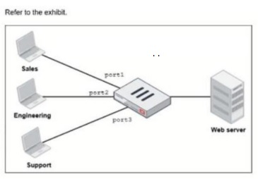
Enable Multiple Interface Policies to select port1 and port2 in the same firewall policy.
Create an Interface Group that includes port1 and port2 to create a single firewall policy.
Select port1 and port2 subnets in a single firewall policy.
Replace port1 and port2 with the any interface in a single firewall policy.
A network administrator enabled antivirus and selected an SSL inspection profile on a firewall policy.
When downloading an EICAR test file through HTTP, FortiGate detects the virus and blocks the file. When downloading the same file through HTTPS, FortiGate does not detect the and does not block the file allowing it to be downloaded. The administrator confirms that the traffic matches the configured firewall policy. What are two reasons for the failed virus detection by FortiGate? (Choose two.)
Refer to the exhibit A partial cloud topology is shown. You deployed a Fortigate Cloud-ative Firewall )CFN= in AWS for Fortigate CNF policy enforcement for EC2 instance traffic Which path does the EC2 traffic take from the EC2 instance to the internet?
Why does the FortiGate administrator need this configuration?
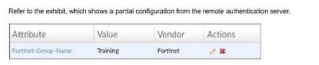
To authenticate only the Training user group.
To set up a RADIUS server Secret.
To authenticate and match the Training OU on the RADIUS server.
To authenticate Any FortiGate user groups.
The exhibit shows the FortiGuard Category Based Filter section of a corporate web filter profile. An administrator must block access to download.com, which belongs to the Freeware and Software Downloads category. The administrator must also allow other websites in the same category. What are two solutions for satisfying the requirement? (Choose two.)
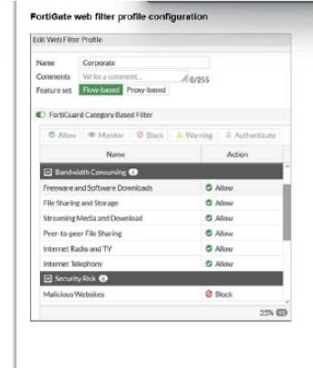
The exhibits show the application sensor configuration and the Excessive-Bandwidth and Apple filter details. Based on the configuration, what will happen to Apple FaceTime if there are only a few calls originating or incoming?
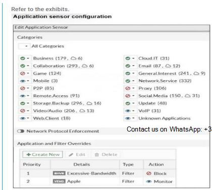
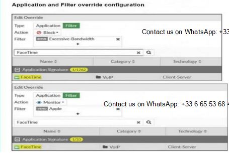
Apple FaceTime will be allowed, based on the Video/Audio category configuration.
Connected monitored ports > Priority > System uptime > FortiGate serial number
Connected monitored ports > HA uptime > Priority > FortiGate serial number
Connected monitored ports > System uptime > Priority > FortiGate serial number
What is the primary FortiGate election process when the HA override setting is enabled?
Connected monitored ports > Priority > HA uptime > FortiGate serial number
Connected monitored ports > Priority > System uptime > FortiGate serial number
Connected monitored ports > HA uptime > Priority > FortiGate serial number
Connected monitored ports > System uptime > Priority > FortiGate serial number
An administrator suspects that the Collector Agent is not forwarding login events to FortiGate. What is the most effective troubleshooting step?
Verify if DC agent is enabled on the FortiGate.
Restart the domain controller to refresh authentication services.
Verify if FortiGate is set to use LDAP authentication instead of FSSO.
Check if TCP port 8000 is open between the collector agent and FortiGate.
What are three key routing principles in SD-WAN? (Choose three.)
Which two statements about equal-cost multi-path (ECMP) configuration on FortiGate are true? (Choose two.)
The predefined deep-inspection and custom-deep-inspection profiles exclude some web categories from SSL inspection, as shown in the exhibit. For which two reasons are these web categories exempted? (Choose two.)
You are configuring FortiAnalyzer on Fortigate. Which step must you take to connect FortiAnalyzer to Fortigate?
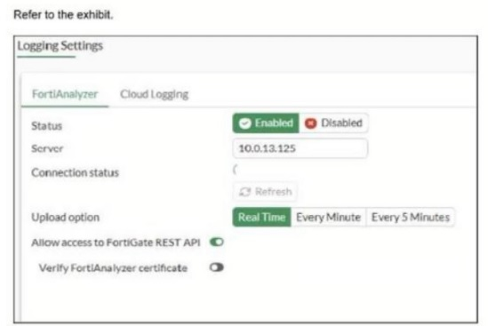
Authorize Fortigate on FortiAnalyzer
Enable disk logging on Fortigate
Verify the FortiAnalyzer serial number
Configure UDP port 514 on Fortigate
How can the administrator view the log messages shown in the exhibit? choose Two
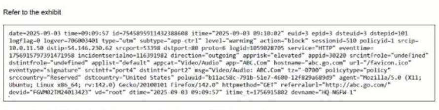
An administrator has created a new firewall address to use as the destination for a static route. Why is the administrator not able to select the new address in the Destination field of the new static route?
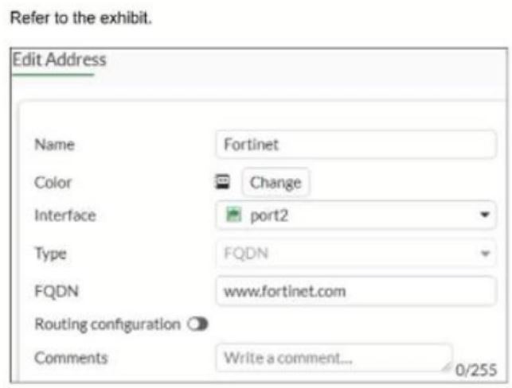
In the new static route, the administrator must select Named Address.
In the new firewall address, the FQDN address must first beresolved.
In the new static route, the administrator must first set the interface to port2.
In the new firewall address, Routing configuration must be enabled.
The exhibits show a diagram of a FortiGate device connected to the network, and the firewall configuration. An administrator created a Deny policy with default settings to deny Webserver access for Remote-User2. The policy should work such that Remote-User1 must be able to access the Webserver while preventing Remote-User2 from accessing the Webserver. Which additional configuration can the administrator add to a deny firewall policy, beyond the default behavior, to block Remote-User2 from accessing the Webserver?
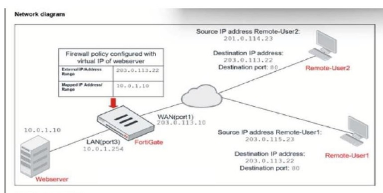
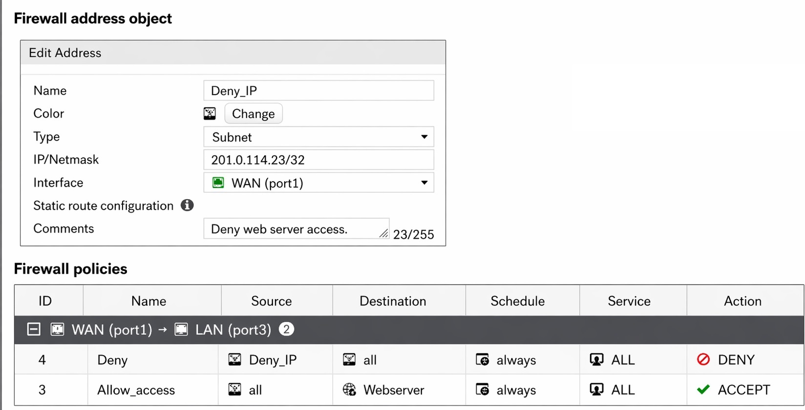
Disable match-vip in the Allow_access policy
Configure a One-to-One IP Pool object in a new policy.
Set the Destination address as Webserver in the Deny policy.
Set the Destination address as Deny_IP in the Allow_access policy.
Based on this partial configuration, what are the two possible outcomes when FortiGate enters conserve mode? (Choose two.)
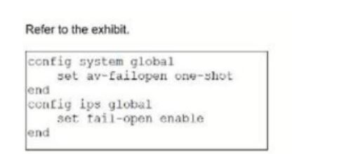
You have implemented the application sensor and the corresponding firewall policy as shown in the exhibits. You cannot acces any of the Google applications, but you are able to access www.fortinet.com.
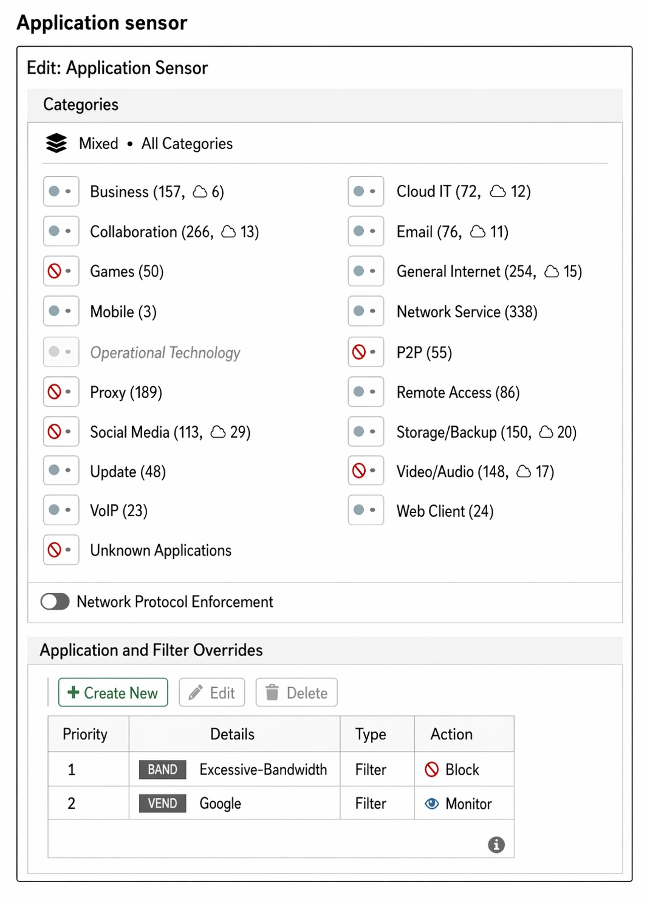
Whta would you do to resolve this issue?
Change the inspeccion mode to proxy -based
Move up Google in the Application and filter Overrides section to set his priority to 1.
Set SSL inspection to deep-content-inspection
Add "Google.com" to the URL category in the security profile.
You are onboarding an agentless, secure web gateway (SWG) endpoint for secure internet access (SIA). What will happen to the user's nonweb traffic?
)The endpoint will use split tunneling to redirect nonweb traffic to FortiSASE.
FortiSASE will use SWG to redirect nonweb traffic to FortiExtender.
All the non web traffic will bypass FortiSASE.
FortiSASE will use Firewall-as-a-Service (FWaaS) to redirect nonweb traffic.
Which two features of IPsec IKEv1 authentication are supported by FortiGate? (Choose two.)
You have configured the FortiGate device for FSSO. A user is successful in log-in to windows, but their access to the internet is denied. What should the administrator check first?
Whether the user is assigned to the correct AD group.
The FortiGate firewall policy settings for SSL decryption.
The FortiGate FSSO active users list for user's IP address
The windows event viewer for failed login attempts.
Which three statements explain a flow-based antivirus profile? (Choose three.)
A FortiGate firewall policy is configured with active authentication however, the user cannot authenticate when accessing a website. Which protocol must FortiGate allow even though the user cannot authenticate?
ICMP
DNS
DHCP
LDAP
What can you conclude from the log shown in the exhibit?
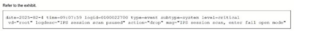
The IPS scan is paused by the IPS diagnostic command with bypass mode option 5.
The IPS socket buffer is full and IPS engine needs more memory to create new sessions.
The IPS session scan is paused and reevaluating the packet because of a dirty flag.
The IPS socket buffer is full and IPS engine cannot decode a packet.
Which two statements are true about an HA cluster? (Choose two.)
You are asked to implement an antivirus profile for files downloaded through FTP, HTTP, and HTTPS. While testing, you are successful with HTTP and FTP protocols, but FortiGate does not block the file download over HTTPS. What could be the cause?
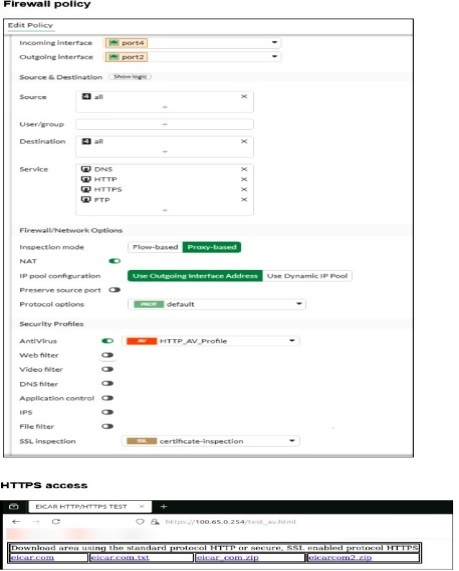
The feature set in the antivirus profile is not set to Flow-based.
Web filter is not enabled on the firewall policy to complement the antivirus profile
The action on the firewall policy is not set to deny.
The SSL inspection mode in the firewall policy is not deep content inspection.
An administrator wants to address shadow IT visibility challenges and prevent users from sending sensitive files outside the organization without proper approval. Which FortiSASE method should the administrator implement to achieve these goals?
Secure private access (SPA)
Secure SD-WAN access (SSD-WAN)
Secure Internet access (SIA)
Secure SaaS access (SSA)
An administrator added a configuration for a new RADIUS server.While configuring, the administrator enabled Include in every user group.What is the impact of enabling Include in every user group in a RADIUS configuration?
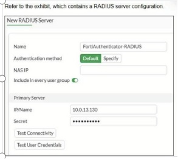
This option places all FortiGate users and groups required to authenticate into the RADIUS server.
This option places the RADIUS server, and all users who can authenticate against that server, into every RADIUS group.
This option places the RADIUS server, and all users who can authenticate against that server, into every user group.
This option places all users into every RADIUS user group, including LDAP groups.
An administrator configured a FortiGate device to act as a collector for agentless polling mode.What must the administrator add to the FortiGate device to retrieve AD user group information?
RADIUS server
TACACS server
LDAP server
Keycloak server
Which two conclusions can you make from the debug flow output? (Choose two)
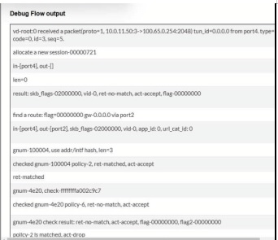
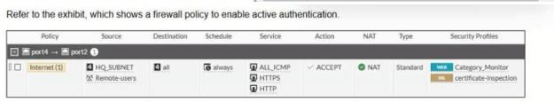
When attempting to access an external website using an active authentication method, the user is not presented with a login prompt. What is the most likely reason for this situation?
The Remote-users group must be set up correctly in the FSSO configuration.
The Service DNS is required in the firewall policy
The Remote-users group is not added to the Destination.
No matching user account exists for this user.
FortiGate is operating in NAT mode and has two physical interfaces connected to the LAN and DMZ networks respectively. Which two statements about the requirements of connected physical interfaces on FortiGate are true? (Choose two)
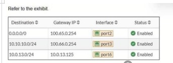
Based on the routing table shown in the exihibit, Which two statements are true? (Choose two)
Which three strategies are valid SD-WAN rule strategies for member selection? (Choose three)
An administrator configures FortiGuard servers as DNS servers on Fortigate using default settings. Whats is true about the DNS connection to a FortiGuard server?
It uses UDP 53
It uses UDP 8888
It uses DNS over HTTPS
It uses DNS over TLS
Refer to the exhibits. An administrator configured the Web Filter Profile to block access to all social networking sites except Facebook. However, when users try to access Facebook.com they are redirected to a Fortiguard web filtering blok page. Based on the exhibits.which configuration change must the administrator make to allow Facebook while blocking all other socila networking sites?
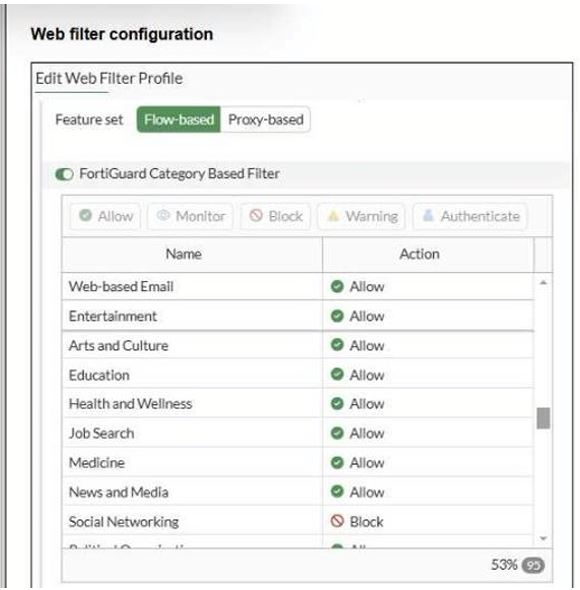
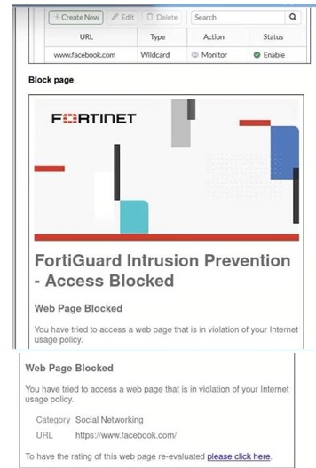
Change the Feature set of Web Filter Profile as Proxy-based
Set the social Networking action as warning in the Fortiguard Category Based Filter
Change the type as Simple in the Static URL Filter section
Set the Action as Exempt for www,facebook.com in the Static URL Filter
You have configured an application control profile, set peer-to-peer traffic to Block under Categories lab and applied it to firewall police. However yor peer-to-peer known ports is passing through the Fortigate without being blocked
Replacement Messages for UDP-based Applications
Application and Filter Overriders
Fortiguard category ratings
Network Protocol Enforcement
Which two statements about equal-cost multi-path ECMP configuration on Fortigate are true.
Refer to the exhibits
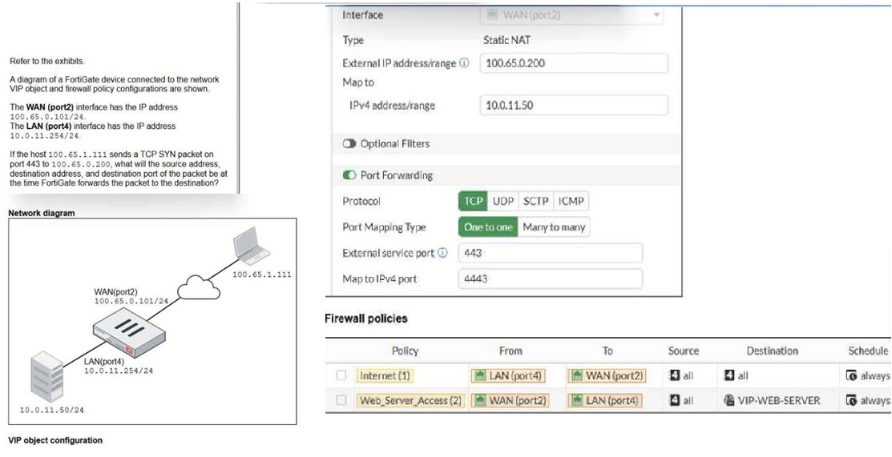
100.65.1.111 10.0.11.50, and 4443 , respectively
10.0.11.254, 100.65.0.200, and 443, respectively
100.65.1.111 10.0.11.50, and 443 , respectively
10.0.11.254, 100.65.0.200, and 4443, respectively
Which statement correctly describes NetAPI pooling mode for the FSSO collector agent?
The collector agent must search Windows application event logs.
The collector agent uses a Windows API to query DC,sfor user logins,
The NetSessionEnum function is used to track user logouts.
NetAPI polling can increase bandwidth usafe in large networks.
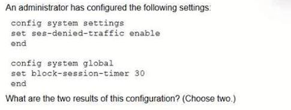
A network administrator has enabled ful SSL insoection and web filtering on Fortigate. When visiting any HTTPS websites, the browser reports certificate warning errors. When visit HTTP websites, the browser does not report errors
The matching firewall policy is set to proxy inspection mode
The certificate used by Fortigate for SSL inspection does not contain the required certificate extensions
The option invalid SSL certificate is set to allow on the SSL/SSH inspection profile.
The browser does not trust the certificate used by fortigate for SSL inspection
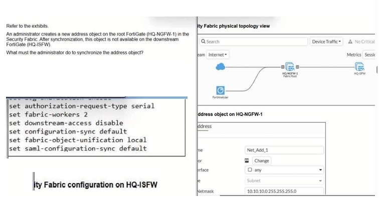
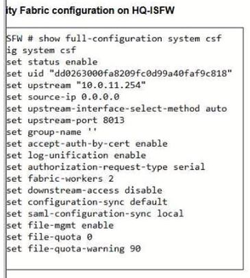
Change the caf setting on HQ-ISFW (downstream) to set configuration-sync local
Change yhe caf setting on both devices to set dowstream-access enable
Change the caf settings on HQ-ISFW(dowstream) to set saml-cofiguration-sync default
Change the caf setting on HQ NGFW1 root to set fabric-object-unification default
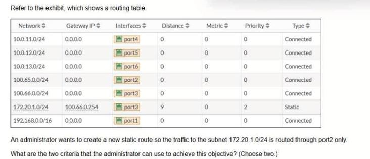
What are two charecteristics of HA cluster heartbeat IP addreses in a Fortigate devices Choose two
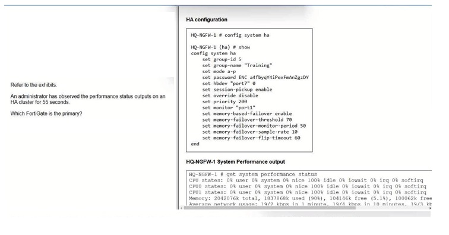
HQ-NGFW-1 with the parameter memory-failover-flip-timeout setting
HQ-NGFW-2 with the parameter memory-failover-threshold settings
HQ-NGFW-1 with the parameter override setting
HQ-NGFW-2 with the parameter priority setting
You are encountering connectivity problems caused by intermediate devices blocking IPsec traffic. In which ti ways can you effectively resolve the problem? Choose two
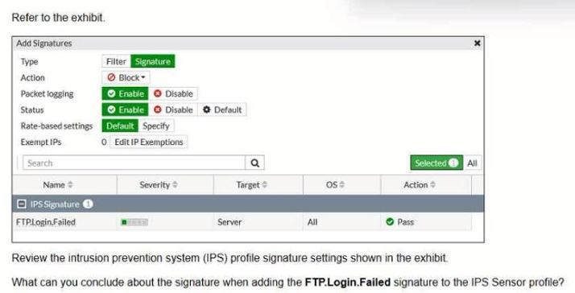
The signature settings uses a custom rating threshold
Fortigate stores a local copy on the packet that matches the signature
Fortigate allows this low severity signature packet and creates a log
The signature setting includes a group of other signatures
Who are two features of Fortigate FSSO agentless polling mode? choose two
The administrator configured SD-WAN rules and set the Fortigate traffic log page to display SD-WAN specific columns SD-WAN Quality and SD-WAN Rule Name Fortigate allows the traffic according to policy ID 1 placed at the top. This policy that allows SD-WAN traffic. Despite these settings the traffic logs do not show the name of the SD-WAN rule used to steer those traffic flows. What could be the reason?
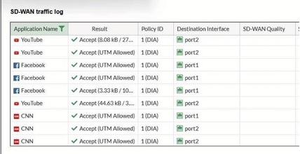
Destinations in the SD-WAN rules are configured for the each application, but feature visibility is not enabled.
SD-WAN rule names do not appear immediately. The administrator must refresh tha page
There is not application control profile applied to the firewall policy.
Fortigate load balanced the traffic according to the implicit SD-WAN rule
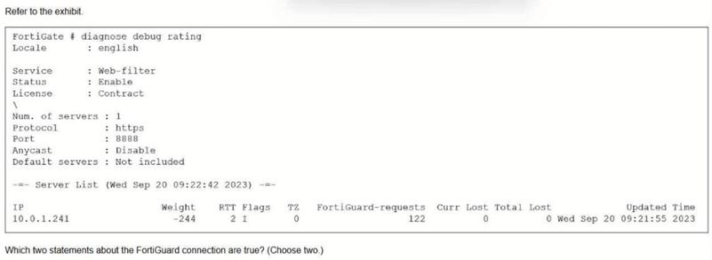
Refer to the exhibits. The exhibits show a diagram of a Fortigate device conectionsconnecte to the networks as well as the firewall policy and IP pool configuration on the Fortigate device. Two PCs, PC1 and PC2 , are connected behind Fortigate and access the internet successfully. However, when the administrator adds a third PC to the network PC3 the PC cannot connect to the internet. Based on the information shown in the exhibit, which two configuration options can the administrator use to fix the conectivity issue for PC3 ? Choose two
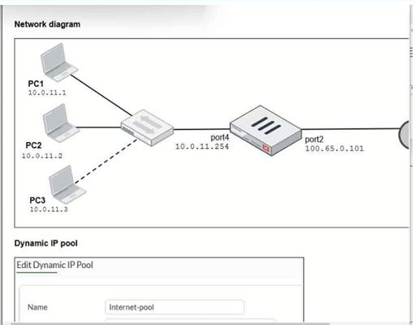
Which two statements about the Fortiguard connection are true? Choose two
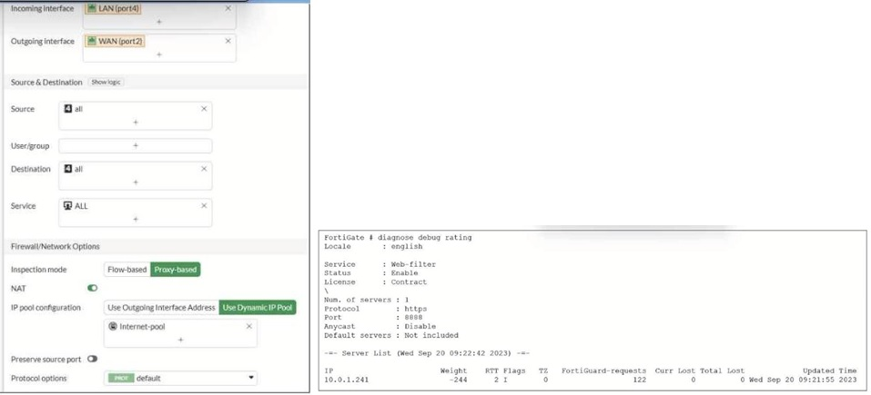
A Fortigate administrator is requiered to reduce the attack surface on the SSL VPN portal. Which SSL timer can you to mitigate a denial of service DoS attack?
SSL VPN dtls-hello-timeout
SSL VPN http-request-header-timeout
SSL VPN idle-timeout
SSL VPN login-timeout
When Fortigate performs SSL/SSH full inspectio, you can decide how it should react when it detects an invalid certificate. Which three actions are valid actions that Fortigate can perform when it detects adn invalid certificate? choose three
Refer the exhibits Show a diagramof a Fortigate device connected to the network, and the firewall polcies, VIP, and IP pool configurations on the Fortigate device The WAN port 2 interface has the IP address 100.65.0.101/24 The LAN port4 interface has the IP address 10.0.11.254/24 The first firewall policy hast NAT enabled using the IP pool. The second firewall policy is configured with a VIP as the destination address. Which IP address will be used to source NAT (SNAT) the internet traffic comming workstation with the IP address 10.0.11.50 ?
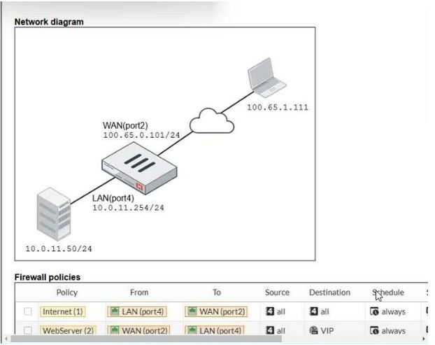
10.0.11.254
100.65.0.101
100.65.0.200
100.65.0.102
Fortigate is integrated with FortiAnalyzer and FortiManager. When creating a firewall policy, which attribute must an administrator include to enhance functionality and enable log recording on FortiAnalyzer and FortiManager?
Policy ID
Universally Unique Identifier
Sequence ID
Log ID
You want to ensure that an SSL VPN user´s authenticated session does not remain active after they disconnect from the VPN
Enable settings to force the firewall authentication session to end when the SSL VPN sessions ends
Configure the firewall authentication session timeout to be lower than the SSL VPN session timeout.
Increase the SSL VPN idle timeout to reduce the chance of early disconnections
Manually clear active firewall authentication sessions after a user disconnects
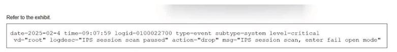
What can you conclude from the log shown in the exhibit?
The IPs socket buffer is full and IPS engine cannot decode a packet
The IPs socket buffer is a full and IPS engine needs more memory to create new sessions
The IPS scan is paused by the IPS diagnostic command with bypass mode option 5
The IPS session scan is paused and reevaluating the packet because of a dirty flag
What are two features of collector agent advanced mode?
A network administratoris reviewing firewall policies in both interface Pair View and By Sequence View. The policies appear in a different order in each view. Why is the policy order different in these two views?
By sequence View groups policies based on rule prority, while interface pair View always follows the order or traffic logs.
The firewall dynamically reorders policiesin Interface Pair View based on recent traffic patterns, but By sequence View remains static
Policies in interface pair View are prioritized by security levels, while By sequence View strictky follows the administrator's manual ordering.
Interface Pair Views sorts policies based on matching interfaces, while By Sequence View shows the actual processing order of rules.
An administrator has configured an Application Overrides for the ABC.Com application signature and set the Action to Allow. This application control profile is then applied to a policy that is scanning all outbound traffic. Logging is enabled in the firewall policy. To test the configuration, the administrator accessed the ABC.Com web site several times.Why are there no logs generated under security logs for ABC.Com?
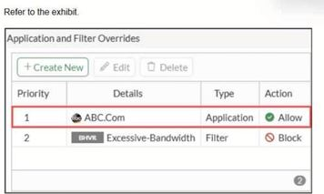
The ABC.Com Type is set as Application instead of Filter.
The ABC.Com is configured under application profile, which must be configured as a web filter profile.
The ABC.Com is hitting the category Excessive-Bandwidth.
The ABC.Com Action is set to Allow.
The predefined deep-inspection and custom-deep-inspection profiles exclude some web categories from SSL inspection, as shown in the exhibit.
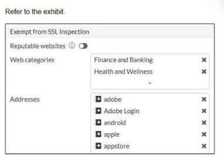
Refer to the exhibits.You have implemented the application sensor and the corresponding firewall policy as shown in the exhibits.
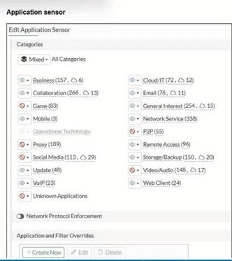
Change the Inspection mode to Proxy-based.
Move up Google in the Application and Filter Overrides section to set its priority to 1
Add *Google*.com to the URL category in the security profile.
Set SSL inspection to deep-content-inspection.
Why is the Antivirus scan switch grayed out when you are creating a new antivirus profile for FTP?
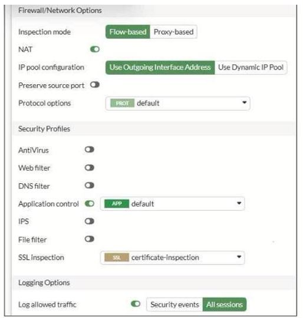
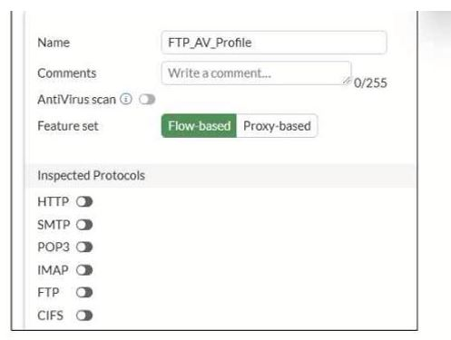
Antivirus scan is disabled under System -> Feature visibility.
The Feature Set for the profile is Flow-based but it must be Proxy-based.
None of the inspected protocols are active in this profile.
FortiGate, with less than 2 GB RAM, does not support the Antivirus scan feature.
The exhibits show the system performance output and default configuration of high memory usage thresholds on a FortiGate device. Based of high memory usage thresholds on a fortigate device.
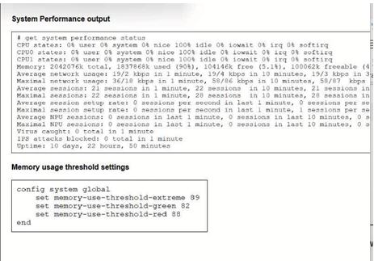
How does NTurbo acceleration enhance antivirus performance?
For flow-based inspection, NTurbo creates two inspection sessions on the FortiGate device.
For proxy-based inspection, NTurbo buffers the whole file and then sends it to the antivirus engine.
For proxy-based inspection, NTurbo offloads traffic to the content processor.
For flow-based inspection, NTurbo establishes a dedicated data path to redirect traffic between the IPS engine and FortiGate ingress and egress interfaces.
Which two statements about the Security Fabric rating are true? (Choose two.)
An administrator has configured a dialup IPsec VPN on FortiGate with add-route enabled. However, the static route is not showing in the routing table.
The exhibits show the application sensor configuration and the Excessive-Bandwidth and Apple filter details.
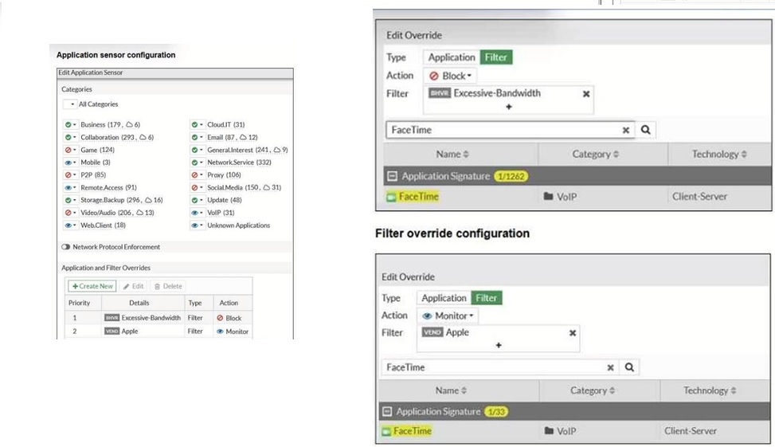
Apple FaceTime will be allowed, based on the Video/Audio category configuration.
Apple FaceTime will be blocked, based on the Excessive-Bandwidth filter configuration.
Apple FaceTime will be allowed, based on the Apple filter configuration.
Apple FaceTime will be allowed only if the Apple filter in Application and Filter Overrides is set to Allow.
An administrator configured both members of an HA cluster at the same time. After one week of monitoring, the administrator wants to verify the HA failover performance.
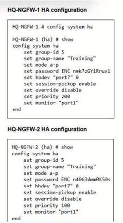
The administrator must increase the HA priority on HQ-NGFW-2.
The administrator must reset the HA uptime on HQ-NGFW-1.
The administrator must set the monitored port1 to down on HQ-NGFW-1
The administrator must set the parameter override to enable on HQ-NGFW-2.
Refer to the exhibit. Why did the FortiGate device drop the packet?
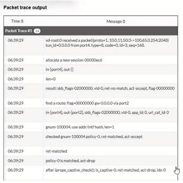
It failed the RPF check.
It cannot reach the next-hop IP.
t matched the default implicit firewall policy.
It matched an explicitly configured firewall policy with the action DENY.
An administrator needs to analyze and resolve port conflicts between SSL VPN and HTTPS administrative access on the same interface.In which two ways can this be done? (Choose two.)
When configuring a FortiGate in a multi-WAN setup, why would an administrator enable session preservation on an interface?
To allow the FortiGate to dynamically change interfaces for all active sessions when a WAN link fails
To ensure that existing SSL VPN connections remain on the same interface even if route changes occur
To make sure all sessions without source NAT enabled always use the primary WAN link
To improve security by forcing users to authenticate again when the WAN link changes
An administrator wants to form an HA cluster using the FGCP protocol. Which two requirements must the administrator ensure both members fulfill? (Choose two.)
A network administrator wants to set up redundant IPsec VPN tunnels on FortiGate by using two IPsec VPN tunnels and static routes.All traffic must be routed through the primary tunnel when both tunnels are up. The secondary tunnel must be used only if the primary tunnel goes down. In addition, FortiGate should be able to detect a dead tunnel to speed up tunnel failover.Which two key configuration changes must the administrator make on FortiGate to meet the requirements? (Choose two.)
Refer to the exhibit.
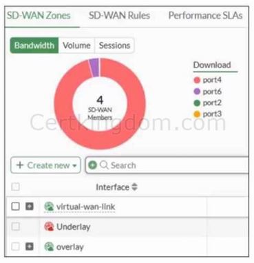
An SD-WAN zone configuration on the FortiGate GUI is shown. Based on the exhibit, which statement is true?
The Underlay zone contains no member.
The virtual-wan-link and overlay zones can be deleted
The Underlay zone is the zone by default.
port2 and port3 are not assigned to a zone.
An administrator wants to configure dead peer detection (DPD) on IPsec VPN for detecting dead tunnels. The requirement is that FortiGate sends DPD probes only when there is no inbound traffic. Which DPD mode on FortiGate meets this requirement?
On Demand
Enabled
On Idle
Usabled
Which two statements about the FortiGuard connection are true? (Choose two.)
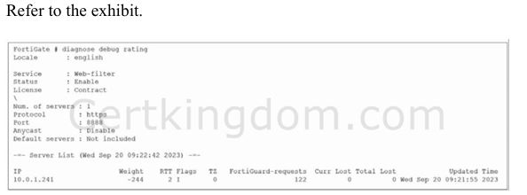
What are two features of FortiGate FSSO agentless polling mode? (Choose two.)
An administrator wants to form an HA cluster using the FGCP protocol. Which two requirements must the administrator ensure both members fulfill? (Choose two.)
A network administrator is troubleshooting an IPsec tunnel between two FortiGate devices. The administrator has determined that phase 1 status is up, but phase 2 fails to come up. Based on the phase 2 configuration shown in the exhibit, which two configuration changes will bring phase 2 up? (Choose two.)
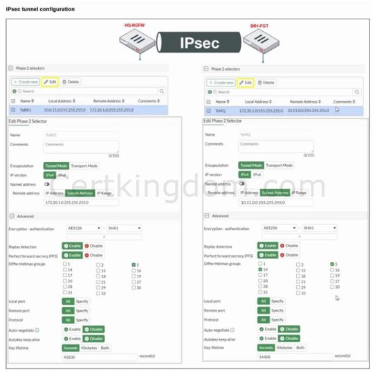
What would be the impact of these settings on the Server certificate SNI check configuration on FortiGate?
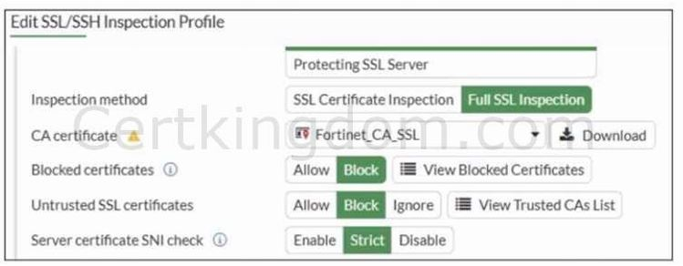
FortiGate will accept and use the CN in the server certificate for URL filtering if the SNI does not match the CN or SAN fields.
FortiGate will accept the connection with a warning if the SNI does not match the CN or SAN fields.
FortiGate will close the connection if the SNI does not match the CN or SAN fields.
FortiGate will close the connection if the SNI does not match the CN and SAN fields
You have implemented the application sensor and the corresponding firewall policy as shown in the exhibits. You cannot access any of the Google applications, but you are able to access www.fortinet.com. Which two actions would you take to resolve the issue? (Choose two.)
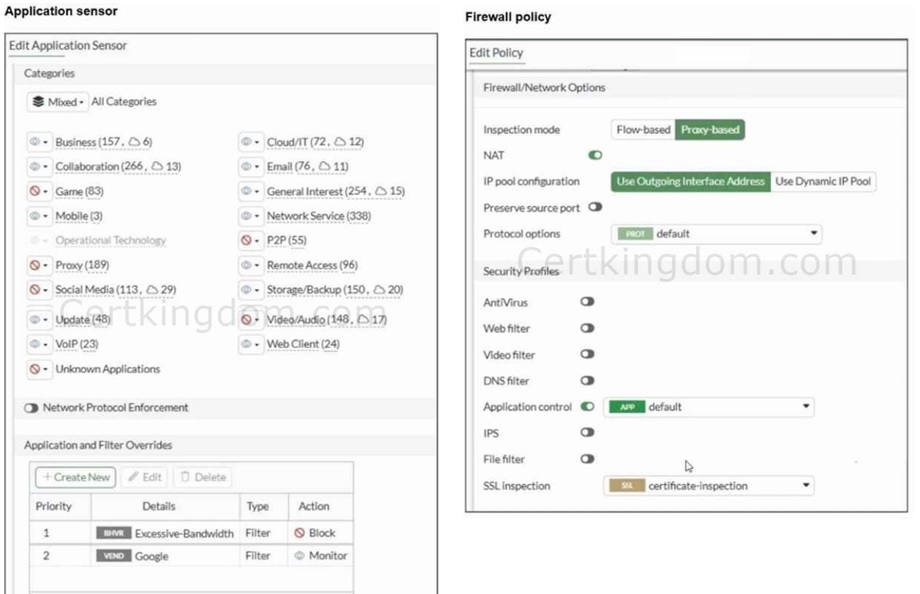
Based on this partial configuration, what are the two possible outcomes when FortiGate enters conserve mode? (Choose two.)
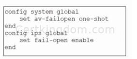
An administrator has configured a dialup IPsec VPN on FortiGate with add-route enabled. However, the static route is not showing in the routing table. Which two statements about this scenario are correct? (Choose two.)
A RADIUS server configuration is shown. An administrator added a configuration for a new RADIUS server While configuring, the administrator enabled Include in every user group What is the impact of enabling Include in every user group in a RADIUS configuration?
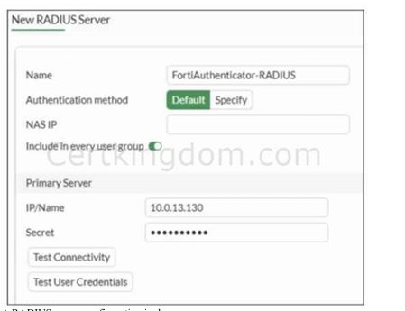
This option places the RADIUS server, and all users who can authenticate against that server, into every FortiGate user group
This option places all FortiGate users and groups required to authenticate into the RADIUS server, which, in this case, is FortiAuthenticator.
This option places the RADIUS server, and all users who can authenticate against that server, into every RADIUS group.
This option places all users into every RADIUS user group, including groups that are used for the LDAP server on FortiGate.
You have created a web filter profile named restrictmedia-profile with a daily category usage quota. When you are adding the profile to the firewall policy, the restrict_media-profile is not listed in the available web profile drop down. What could be the reason?
The web filter profile is already referenced in another firewall policy.
The firewall policy is in no-inspection mode instead of deep-inspection.
The naming convention used in the web filter profile is restricting it in the firewall policy.
The inspection mode in the firewall policy is not matching with web filter profile feature set.
Refer to the exhibits. A diagram of a FortiGate device connected to the network, as well as the firewall policy and IP pool configuration on the FortiGate device are shown. Two PCs. PC1 and PC2, are connected behind FortiGate and can access the internet successfully. However, when the administrator adds a third PC to the network (PC3), the PC cannot connect to the internet. Based on the information shown in the exhibit, which two configuration options can the administrator use to fix the connectivity issue for PC3? (Choose two.)
Which two statements are correct when the FortiGate device enters conserve mode? (Choose two.)
Based on the current HA status, an administrator updates the override and priority parameters on HQ-NGFW-1 and HQ-NGFW-2 as shown in the exhibits. What would be the expected outcome in the HA cluster?
HQ-NGFW-2 will take over as the primary because it has the override enable setting and higher priority than HQ-NGFW-1.
HQ-NGFW-1 will remain the primary because HQ-NGFW-2 has lower priority
The HA cluster will become out of sync because the override setting must match on all HA members.
HQ-NGFW-1 will synchronize the override disable setting with HQ-NGFW-2
Refer to the exhibit A firewall policy to enable active authentication is shown. When attempting to access an external website using an active authentication method, the user is not presented with a login prompt. What is the most likely reason for this situation?
No matching user account exists for this user.
The Remote-users group must be set up correctly in the FSSO configuration.
The Remote-users group is not added to the Destination
The Service DNS is required in the firewall policy.
When configuring firewall policies which of the following is true regarding the policy ID? (Choose two.)
The exhibits show a diagram of a FortiGate device connected to the network, as well as the IP pool configuration and firewall policy objects. The WAN (port2) interface has the IP address 100.65.0.101. The LAN (port4) interface has the IP address 10.0.11.254. Which IP address will be used to source NAT (SNAT) the traffic, if the user on HQ-PC-1 (10.0.11.50) pings the IP address of BR-FGT (100.65.1.111)?
100.65.0.101
100.65.0.49
100.65.0.149
100.65.0.99
An administrator manages a FortiGate model that supports NTurbo How does NTurbo acceleration enhance antivirus performance?
For flow-based inspection. NTurbo establishes a dedicated data path to redirect traffic between the IPS engine and FortiGate ingress and egress interfaces.
For flow-based inspection. NTurbo creates two inspection sessions on the FortiGate device.
For proxy-based inspection. NTurbo offloads traffic to the content processor.
For proxy-based inspection. NTurbo buffers the whole file and then sends it to the antivirus engine.
As an administrator you have created an IPS profile, but it is not performing as expected. While testing you got the output as shown in the exhibit What could be the possible reason of the diagnose
There is a no firewall policy configured with an IPS security profile.
Administrator entered the command diagnose test application ipsmonitor 5.
FortiGate entered into IPS fail open state.
Administrator entered the command diagnose test application ipsmonitor 99.
Which two ways can you view the log messages shown in the exhibit? (Choose two.)
The administrator configured SD-WAN rules and set the FortiGate traffic log page to display SD-WANspecific columns: SD-WAN Quality and SD-WAN Rule Name FortiGate allows the traffic according to policy ID 1 placed at the top. This is the policy that allows SDWAN traffic. Despite these settings, the traffic logs do not show the name of the SD-WAN rule used to steer those traffic flows What could be the reason?
SD-WAN rule names do not appear immediately. The administrator must refresh the page.
There is no application control profile applied to the firewall policy.
Destinations in the SD-WAN rules are configured for each application, but feature visibility is not enabled.
FortiGate load balanced the traffic according to the implicit SD-WAN rule.
A diagram of a FortiGate device connected to the network VIP object and firewall policy configurations are shown. The WAN (port2) interface has the IP address 100.65.0.101. The LAN (port4) interface has the IP address 10.0.11.254. If the host 100.65.1.111 sends a TCP SYN packet on port 443 to 100.65.0.200. what will the source address, destination address, and destination port of the packet be at the time FortiGate forwards the packet to the destination?
10.0.11.254, 100.65.0.200. and 443, respectively
10.0.11.254, 10.0.15.50, and 4443. respectively
100.65.1.111, 10.0.11.50, and 4443. respectively
100.65.1.111, 10.0.11.50. and 443. respectively
A network administrator is reviewing firewall policies in both Interface Pair View and By Sequence View. The policies appear in a different order in each view. Why is the policy order different in these two views?
By Sequence View groups policies based on rule priority, while Interface Pair View always follows the order of traffic logs.
The firewall dynamically reorders policies in Interface Pair View based on recent traffic patterns, but By Sequence View remains static.
Interface Pair View sorts policies based on matching interfaces, while By Sequence View shows the actual processing order of rules.
Policies in Interface Pair View are prioritized by security levels, while By Sequence View strictly follows the administrator's manual ordering.
A new administrator is configuring FSSO authentication on FortiGate using DC Agent Mode. Which step is not part of the expected process?
The DC agent sends login event data directly to FortiGate.
FortiGate determines user identity based on the IP address in the FSSO list.
NetAPI polling can increase bandwidth usage in large networks.
The collector agent must search Windows application event logs.
Which statement correctly describes NetAPI polling mode for the FSSO collector agent?
The collector agent uses a Windows API to query DCs for user logins.
The NetSessionEnum function is used to track user logouts
NetAPI polling can increase bandwidth usage in large networks.
The collector agent must search Windows application event logs.
An administrator has observed the performance status outputs on an HA cluster for 55 seconds. Which FortiGate is the primary?
HQ-NGFW-1 with the parameter memory-failover-flip-timeout setting
HQ-NGFW-2 with the parameter priority setting
HQ-NGFW-1 with the parameter override setting
HQ-NGFW-2 with the parameter memory-failover-threshold setting
Refer to the exhibit. A partial cloud topology is shown. You deployed a FortiGate Cloud-Native Firewall (CNF) in AWS. During the deployment, which components must the FortiGate CNF create to handle traffic from the EC2 instance?
The customer VPC and GWLBe
The gateway load balancer endpoint (GWLBe) in the customer virtual private cloud (VPC)
The CNF VPC. customer VPC. and GWLB
The GWLB. GWLBe, and the internet gateway (IGW) in the customer VPC
An administrator has configured an Application Overrides for the ABC.Com application signature and set the Action to Allow This application control profile is then applied to a firewall policy that is scanning all outbound traffic. Logging is enabled in the firewall policy. To test the configuration, the administrator accessed the ABC.Com web site several times. Why are there no logs generated under security logs for ABC.Com?
The ABC Com is hitting the category Excessive-Bandwidth.
The ABC.Com Type is set as Application instead of Filter.
The ABC.Com is configured under application profile, which must be configured as a web filter profile.
The ABC Com Action is set to Allow
The system performance output and default configuration of high memory usage thresholds on a FortiGate device are shown. Based on the system performance output, what are the two possible outcomes? (Choose two.)
An administrator wanted to configure an IPS sensor to block traffic that triggers the signature set number of times during a specific time period. How can the administrator achieve the objective?
Use IPS group signatures, set rate-mode 60.
Use IPS packet logging option with periodical filter option.
Use IPS signatures, rate-mode periodical option.
Use IPS filter, rate-mode periodical option.
Which two components are part of the secure internet access (SIA) agent-based mode on FortiSASE? (Choose two.)
You have implemented the application sensor and the corresponding firewall policy as shown in the exhibits. Which two factors can you observe from these configurations? (Choose two.)
Which three statements about SD-WAN performance SLAs are true? (Choose three.)
The NOC team connects to the FortiGate GUI with the NOC_Access admin profile. They request that their GUI sessions do not disconnect too early during inactivity. What must the administrator configure to answer this specific request from the NOC team?
Increase the admintimeout value under config system accprofile noc Access.
Increase the of line value of the override idle Timeout parameter in the NOC_Access admin profile.
Move NOC_Access to the top of the list to ensure all profile settings take effect.
Move NOC_Access to the top of the list to ensure all profile settings take effect.
The FortiGate device HQ-NGFW-1 with the IP address 10.0.13.254 sends logs to the FortiAnalyzer device with the IP address 10.0.13.125. The administrator wants to verify that reliable logging is enabled on HQ-NGFW-1. Which exhibit helps with the verification?
A
B
C
D
The predefined deep-inspection and custom-deep-inspection profiles exclude some web categories from SSL inspection, as shown in the exhibit For which two reasons are these web categories exempted? (Choose two.)
Why is the Antivirus scan switch grayed out when you are creating a new antivirus profile for FTP?
Antivirus scan is disabled under System -> Feature visibility
None of the inspected protocols are active in this profile.
The Feature Set for the profile is Flow-based but it must be Proxy-based
FortiGate. with less than 2 GB RAM. does not support the Antivirus scan feature.
FortiGate is integrated with FortiAnalyzer and FortiManager. When creating a firewall policy, which attribute must an administrator include to enhance functionality and enable log recording on FortiAnalyzer and FortiManager?
Universally Unique Identifier
Policy ID
Sequence ID
Log ID
How does FortiExtender connect to FortiSASE in a site-based, remote internet access method?
FortiExtender uses a Virtual Extensible LAN (VXLAN)-over-IPsec connection.
FortiExtender establishes a secure SSL connection using FortiClient
FortiExtender first connects to a FortiGate LAN extension through a secure web gateway (SWG).
FortiExtender uses the proxy auto-configuration <PAC) file and an explicit web proxy to connect.
What are two features of collector agent advanced mode? (Choose two.)
You have configured the below commands on a FortiGate.
What would be the impact of this configuration on FortiGate?
FortiGate will enable strict RPF on all its interfaces and porti will be exempted from RPF checks.
FortiGate will enable strict RPF on all its interfaces and porti will be enable for asymmetric routing.
The global configuration will take precedence and FortiGate will enable strict RPF on all interfaces.
Port1 will be enabled with flexible RPF. and all other interfaces will be enabled for strict RPF
An administrator wants to create a new static route so the traffic to the subnet 172.20.1.0 is routed through port2 only. What are the two criteria that the administrator can use to achieve this objective? (Choose two.)
There are multiple dialup IPsec VPNs configured in aggressive mode on the HQ FortiGate. The requirement is to connect dial-up users to their respective department VPN tunnels. Which phase 1 setting you can configure to match the user to the tunnel ?
Local Gateway
Dead Peer Detection
Peer ID
IKE Mode Config
A network administrator has enabled full SSL inspection and web filtering on FortiGate. When visiting any HTTPS websites, the browser reports certificate warning errors. When visiting HTTP websites, the browser does not report errors. What is the reason for the certificate warning errors?
The option invalid SSL certificates is set to allow on the SSL/SSH inspection profile.
The matching firewall policy is set to proxy inspection mode.
The browser does not trust the certificate used by FortiGate for SSL inspection.
The certificate used by FortiGate for SSL inspection does not contain the required certificate extensions.
You have configured an application control profile, set peer-to-peer traffic to Block under the Categories tab. and applied it to the firewall policy. However, your peer-to-peer traffic on known ports is passing through the FortiGate without being blocked. What FortiGate settings should you check to resolve this issue?
FortiGuard category ratings
Network Protocol Enforcement
Replacement Messages for UDP-based Applications
Application and Filter Overrides
What are two characteristics of HA cluster heartbeat IP addresses in a FortiGate device? (Choose two.)
Refer to the exhibit. Based on the routing table shown in the exhibit, which two statements are true? (Choose two.)
FortiGate is operating in NAT mode and has two physical interfaces connected to the LAN and DMZ networks respectively. Which two statements about the requirements of connected physical interfaces on FortiGate are true? (Choose two.)
A web filter profile configuration and firewall policy configuration are shown. You are trying to access www. facebook.com, but you are redirected to a FortiGuard web filtering block page. Based on the exhibits, what is the possible cause of the issue?
The web rating override configuration is incorrect
The web filter profile feature set is configured incorrectly.
The firewall policy inspection mode is incorrect.
For www. facebook. com. the URL filter action is incorrect.